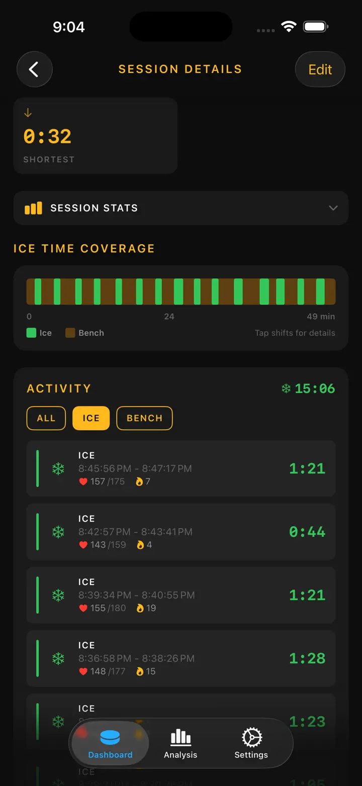

Ice Time Track
Hockey Schicht Workout Track
Automatische Eiszeit-Erfassung mit der Apple Watch – jetzt mit Ausrüstungs-Tracking und Schleif-Erinnerungen. Nach dem Spiel: Schichten, Stats und Gesundheit.
Im App Store laden
Über die App
Deine Schichten. Automatisch erfasst.
Ice Time Track nutzt deine Apple Watch, um zu erkennen, wann du auf dem Eis bist und wann auf der Bank. Keine Knöpfe, kein Aufwand. Starte einfach eine Session und spiel.
SO FUNKTIONIERT'S
Unser Bewegungserkennungs-Algorithmus analysiert Beschleunigungssensor, Gyroskop und GPS-Daten, um Skating von Ruhen zu unterscheiden. Dein iPhone synchronisiert Live-Updates, sodass du Statistiken in Echtzeit oder nach dem Spiel einsehen kannst.
FUNKTIONEN
- Automatische Schichterkennung, Bewegungs- und Gesundheits-Tracking
- Gesamte Eiszeit und Aufschlüsselung pro Schicht
- Spielprotokoll – Tore, Strafen, Pausen
- Herzfrequenz und Kalorien pro Schicht
- Visuelle Zeitleiste des Eis/Bank-Musters
- Session-Verlauf mit Trends
- Standort-Tagging für jede Eishalle
- Spiel-, Trainings- und Scrimmage-Modi
- Optionale haptische Benachrichtigungen
- Datenexport als CSV oder JSON
APPLE INTEGRATION
Funktioniert mit Apple Watch. Synchronisiert mit Apple Health.
DATENSCHUTZ
Alle Daten lokal gespeichert. Kein Konto erforderlich.
Von Eishockeyspielern für Eishockeyspieler entwickelt. Kenne deine Eiszeit. Steigere dein Spiel.
Ice Time Track verwandelt deine Apple Watch in einen intelligenten Eishockey-Begleiter, der genau weiß, wann du auf dem Eis bist und wann auf der Bank. Keine Knöpfe. Keine Ablenkung. Einfach pures, automatisches Tracking, damit du dich aufs Spielen konzentrieren kannst.
SO FUNKTIONIERT'S
Starte eine Session auf deiner Apple Watch und vergiss sie. Unsere fortschrittliche Bewegungserkennung analysiert Beschleunigungssensor, Gyroskop und GPS-Daten in Echtzeit. Dein iPhone bleibt synchron mit Live-Updates – beobachte deine Statistiken von der Tribüne aus oder schau dir nach dem Schlusspfiff alles an.
WAS DU ENTDECKEN WIRST
- Gesamte Eiszeit — Wisse genau, wie viele Minuten du dort verbracht hast, wo es zählt
- Schicht-für-Schicht-Aufschlüsselung — Jede Schicht mit Dauer, Herzfrequenz und Kalorien
- Spielprotokolle – Tore/Strafen nach Dritteln
- Herzfrequenz-Tracking — Überwache Anstrengung beim Skating vs. Erholung
- Kalorienverbrauch — Genaue Daten synchronisiert von Apple Health
- Session-Zeitleiste — Visuelles Diagramm deines Eis/Bank-Musters
- Standort-Speicher — Automatisches Taggen der Eishalle
- Historische Trends — Vergleiche Sessions und verfolge Fortschritte
FÜR JEDEN SPIELER GEBAUT
Ob Hobbyliga-Spiele, hartes Training oder Scrimmages – Ice Time Track passt sich an. Tagge Sessions nach Typ, füge Gegnernamen hinzu und erstelle dein persönliches Eishockey-Tagebuch.
NAHTLOSE APPLE INTEGRATION
- Synchronisiert Workouts mit Apple Health
- Läuft im Hintergrund während Sessions
- Optionale haptische Alerts bei Eis/Bank-Wechseln
- Optimiert für geringen Akkuverbrauch
DATENSCHUTZ ZUERST
Deine Daten bleiben deine. Lokal auf deinen Geräten gespeichert. Keine Konten. Keine Daten verkauft. Niemals.
VON SPIELERN, FÜR SPIELER
Entwickelt von Eishockey-Liebhabern, die es satt hatten, Eiszeit zu schätzen. Echte Zahlen. Echte Einblicke. Null Aufwand.
Jetzt herunterladen und nie wieder über deine Eiszeit rätseln.
Schlittschuhe schnüren. Puck einwerfen. Den Rest erledigen wir.
Privacy Policy: https://masawata.net/privacy-policy.html Terms Of Service: https://www.apple.com/legal/internet-services/itunes/dev/stdeula/
Screenshots





Ice Time Track
Automatische Eiszeit-Erfassung mit der Apple Watch – jetzt mit Ausrüstungs-Tracking und Schleif-Erinnerungen. Nach dem Spiel: Schichten, Stats und Gesundheit.
Im App Store laden